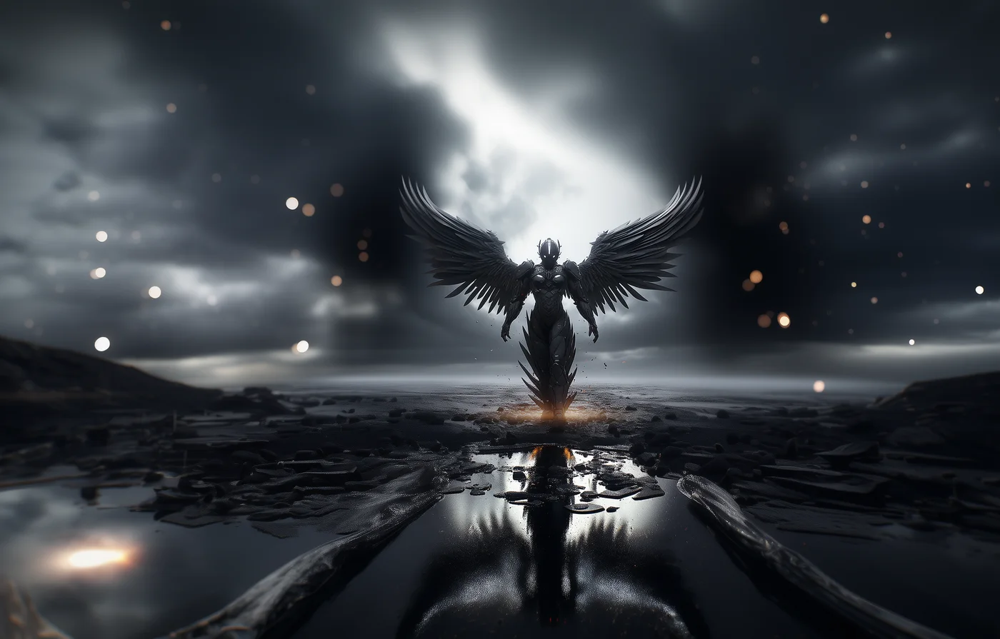
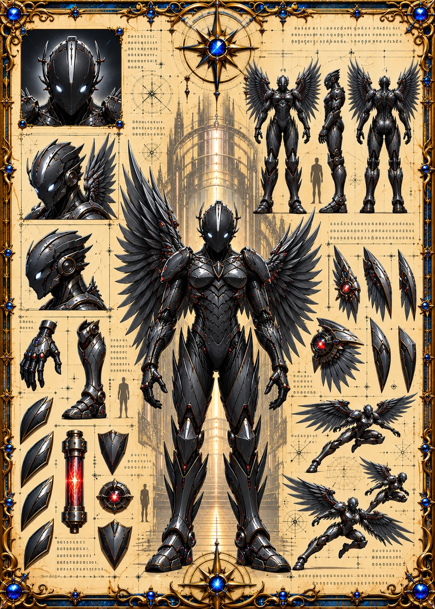

©
©
GENEZYS ARCHIVE · Earth 1 · Legionnaire
Krizar
Supernova Emissary

Archive record
Krizar is the closest thing the Luminary Vanguard has to a living star. The Corona Burst heals allies and scorches enemies in a single eruption, a gift and a warning at once. An old Vanguard saying claims that if the Beacon ever fails, a Supernova Emissary will become the light. Krizar hopes never to find out.
Combat signature
Corona Burst
80 Cosmara
350 Animus
290 Vitalis
Erupts with stellar energy: Heals all allies for 60 and restores 40 Cosmara to all allies. Deals 100 damage to all enemies.
Genezys 01:09 ™&©2026LEGIONS
